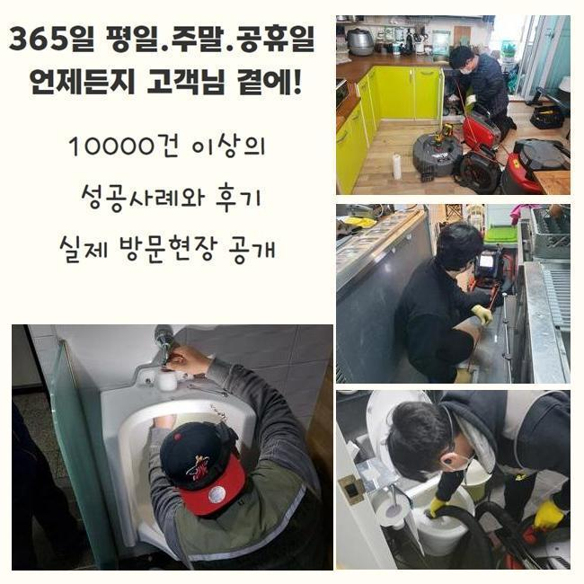
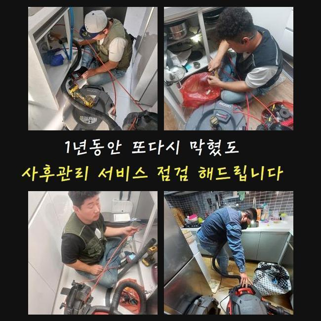
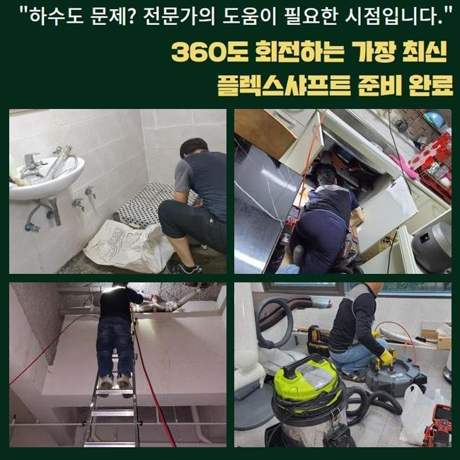
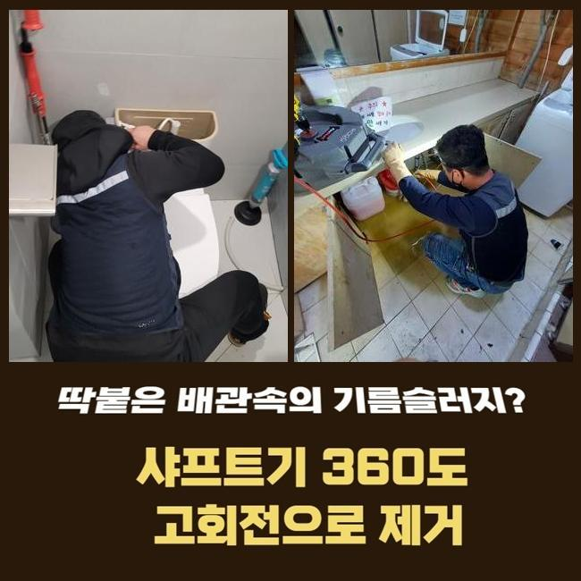
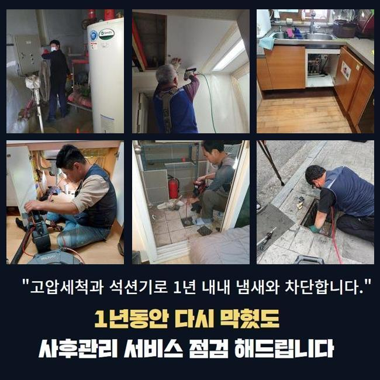
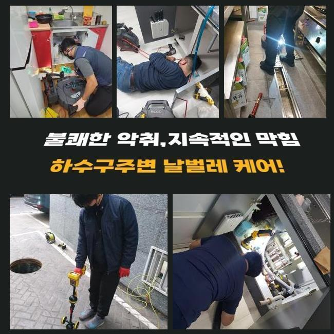
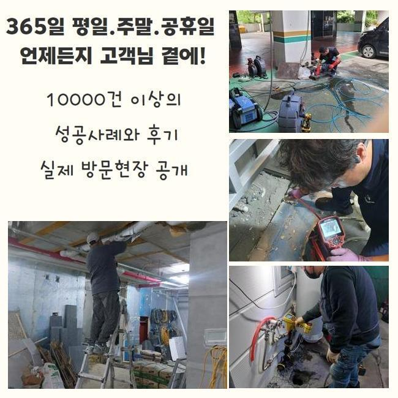

🏠 용인 중앙동욕실막힘 남사읍 하수구청소 설비
용인 중앙동 하수구막힘 전문 시공 후기

📋 작업 개요
- 위치: 용인 중앙동, 중앙동, 용인
- 서비스 유형: 하수구막힘, 배관막힘, 맨홀막힘, 역류해결, 배관청소, 고압세척
- 작업 일시: 2025. 2. 3. 10:34
- 업체명: 하수구수사대 (010-5615-2118)
🔍 문제 상황
용인 중앙동욕실막힘 남사읍 하수구청소 설비
저희전문진은 최근의 상가건축물의 통수장애를 시정하기위하여 달려가보았습니다
상담을 진행했던 고객의 요청으로 저희들은 상가라인의 화장실부분에서 골치아픈 이물질 역류 배수정체를 해결하고자 현장당도를 했는데요
의뢰인은 이것으로 인하여 다양한 민원들을 감당하고 계셨었죠
현재의 사태들을 신속하게 조치할 생각에 저희들은 도착 후 문제의 장소를 살폈습니다
지금까지 축적되는 오염물들이 관로를 좁히게된걸 관찰한 후 빠르게 고쳐냈는데요
이전의 현장들로 판단하건대 이런 오염물들은 8할 이상이 공동배수관에서 관찰되기에 이런 문제들이 생겨나버린것으로 생각했습니다
그러므로 빠르게 외부라인으로 자리를 옮겨 이상이 있는 배수관의 스팟을 파악하기위하여 검수를 시작했는데요
탐지장치를 이용하여 배관의 지점을 찾아주었고 안을 살피니 오염된 정도가 심각했던 모습이였어요
내부로부터 쌓인 부유물들의 잔여물질과 외측에서 흘러온 흙까지 섞여있던 상태였어요

🔎 원인 분석
💡 전문가 진단: 정밀 진단 장비를 사용하여 슬러지의 고착 여부를 판명하고 타격/세척 작업을 실시했습니다.
이러한 통수장애를 해결하고자 빠르게 알맞은 대응들을 실시했고 상가건물의 시설을 장기적으로도 유지하도록 하였는데요
어느 한 구간에 흡착물들이 누적되면 많은 막힘들을 유발시키기에 해결들을 미루지않는게 필요하죠
검수하니 이물들이 여기저기 자리하고 있는걸 확인했는데요
폐기물들은 지속적으로 누적될 시서 고착물로 굳어버렸죠
고착화가 진행되면서부터 배수정체가 등장한것이라 판단했죠
그리하여, 장치 사용을 해서 하수관을 청소해주었어요
장치 사용을 해서 하수관을 세척해줄때에는 높은 압력의 물줄기가 이행되어야해요
만일 맨홀쪽에 잔해가 존재할 경우 평상시의 방식으론 개선을 꿈꾸기엔 힘든데요
그러므로, 높은 압력을 써서 효율적으로 오염물질을 없애주는것이 이행되어야해요
컨디션을 회복시키면 관로를 깔끔히 보존가능하고 결함이 누적되는 것을 미리 막아낼 수 있어요
그렇기에, 하수관을 시공한다면 고압수청소를 염두에 두시는 것도 추천드려요

🔧 작업 과정
덧붙여 잔해물이 축적되지 못하게 때에 맞춰 진단해보는게 중요하고 알맞게 조치한다면 골머리 앓는 일 없이 막힘들을 해결할 수 있습니다
그리하여 결함들이 발생했을 때는 괄목할만한 대응들이 요구되고 전문가들의 도움들로 튼튼한 환경구축을 유지시키는게 중요한데요
관리들도 꼭 필요하겠으나 전문적인 솔루션을 통해 배관을 깔끔히 유지시키는게 실용적인 방법들이 됩니다
일련의 과정들을 빈틈없이 실시하기위해선 구조라던가 특수성을 파악해야해요
하수도의 경우 이런저런 소재들로 설치되며 시간들이 지나가며 사용기한이 떨어지기에 무리를 이용하는건 적절치못합니다
소재별 특성과 위험요소들을 인지하고 알맞는 압력들을 밀어넣어주어야 합니다
위와같은 조건을 잘 지키면 고압세척들로 완성도 높은 결과물을 경험할 수 있죠
해당 시점에 이용한 석션기기는 압력의 차이를 통해 하수관의 잔재들을 효율적으로 청소했는데요
석션장치에 흡입된 부유물들의 잔재들을 보았으며 내시경장치를 삽입해 깊숙한 부분까지 살펴보니 잔해들이 상당하여 배관공간을 협소하게 했죠
이 부분은 염두에 두고 고압수청소를 통해 저희들은 해당 장소에서 발생한 배수정체를 조속하고 실용적으로 해결하고 각 라인의 컨디션과 이물의 양상을 염두에 두고 작업들을 이행한 결과 수월한 배수상황을 지켜냈어요
이러한 증세는 주로 이물들이 내측에 침전되서 쌓이는 증상으로서 배수공간이 협소하여 통수들이 중단되는 현상들이 걷잡을 수 없이 커지기도해요
이럴땐 전문진의 능력을 바탕으로 내시경도구를 운용해 심층부까지 점검해주고 명확한 기조요소들을 없애주는것이 이행되어야해요
고수압세척들을 진행하며 저희업체는 목표지점으로 케이블을 삽입해주었고 입구쪽 지점에선 슬러지들이 일시에 배출되는 현상을 관찰했죠
반대로 기름슬러지가 자리한 3미터 라인에선 내구성의 상황들을 확인해주고 분사의 압력을 달리하면서 청소들을 진행해주었는데요
기름고착의 고착이 심했기에 온수 고압수청소를 실시하였는데 안전성과 관련된 수칙을 준수하면서 기름슬러지를 처리했죠
배수정체의 경우 예고없이 등장해 때론 감당하기 힘든 고충들을 초래합니다
오수가 안빠지는 문제의 경우 주로 잔해물이 점차 쌓여 발생되기에 골든타임 내에 배수정체를 시정해야해요


✅ 작업 완료
고객의 고민을 덜어드리기위해 빠르게 대처해드릴게요
막힘들을 조사하고 계획들을 정하여 작업에 집중합니다
신속한 대응들이 우선이기에 장기간 방임하시면 안됩니다
솔루션이 필요하다라면 편히 문의하시면 되겠습니다
결함이 발생하면 안정적으로 대응하여 안전하며 깔끔한 통수과정을 지켜낼게요




⚠️ 하수구 배관 막힘 예방 및 관리 가이드
- ✅ 머리카락, 비닐, 물티슈 등 물에 분해되지 않는 이물질은 하수구 유입을 절대 금지해 주세요.
- ✅ 하수구 거름망을 씌우고 모여진 이물질은 주기적으로 쓰레기통에 바로 비워주셔야 합니다.
- ✅ 배관 노후가 심할 경우 이물질이 더 쉽게 걸리므로 주기적인 배관 세척(고압세척 등)을 권장합니다.
- ✅ 작업 후 1년 이내 재발 시 하수구수사대에서 무상 A/S 보증 서비스를 제공합니다.
💡 핵심 정리
- 확실한 장비 작업(내시경 점검 및 샤프트 스케일링)으로 원인을 뿌리 뽑습니다.
- 작업 후 1년 이내에 동일한 부위 재발 시 100% 무상 A/S 서비스를 보장합니다.
- 서울 · 경기 · 인천 전 지역에 24시간 언제든 긴급 출동할 수 있도록 항시 대기 중입니다.
❓ 자주 묻는 질문 (FAQ)
🚨 용인 중앙동 하수구막힘 문제로 고민이신가요?
정확한 원인 진단과 확실한 시공으로 재발 없는 해결을 약속드립니다.
24시간 긴급 출동 | 서울 · 경기 · 인천 전지역 | 1년 내 재발 시 무상 A/S